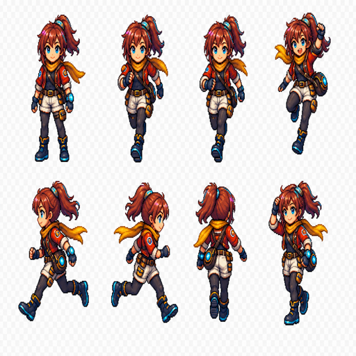
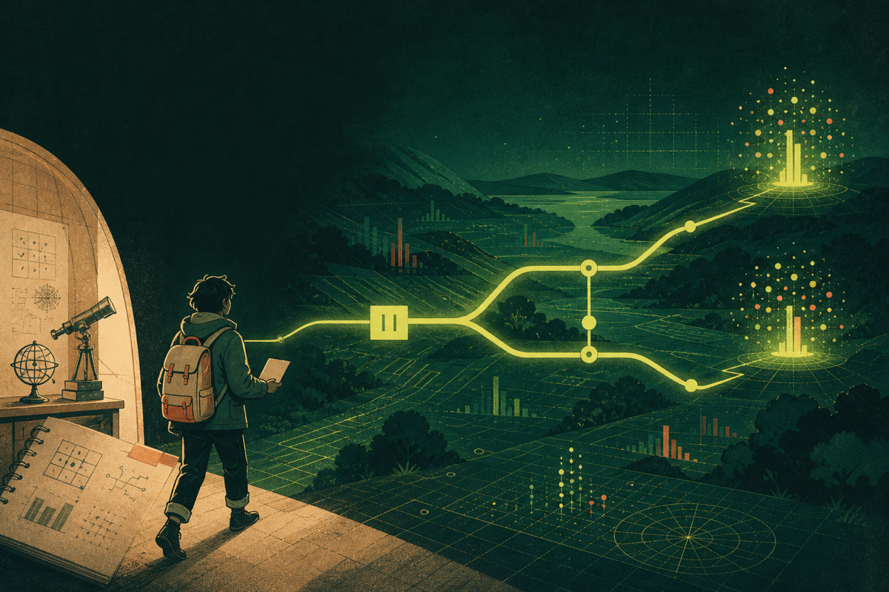
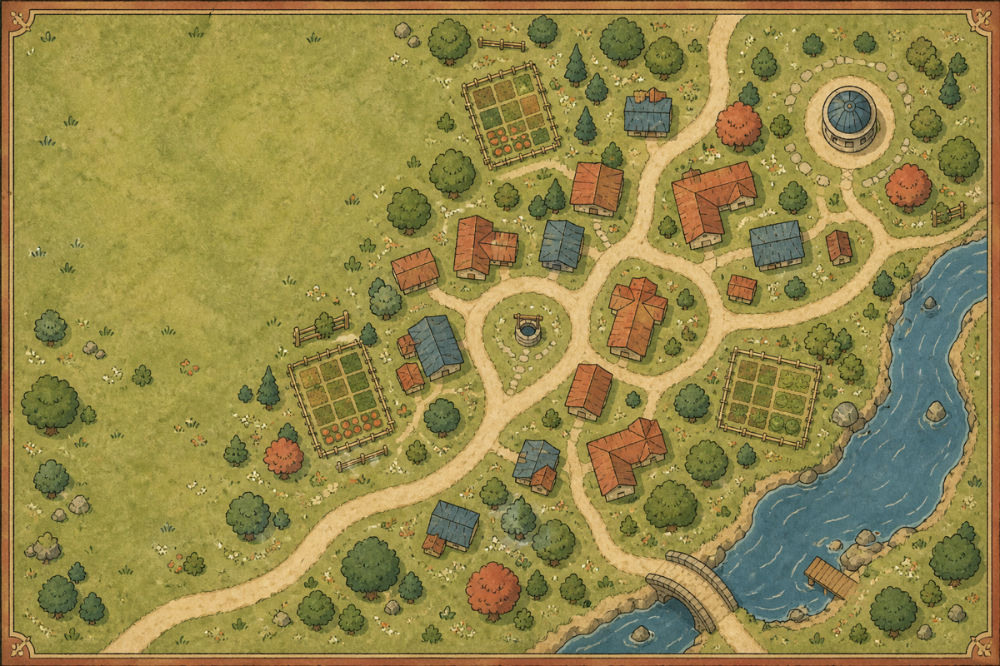
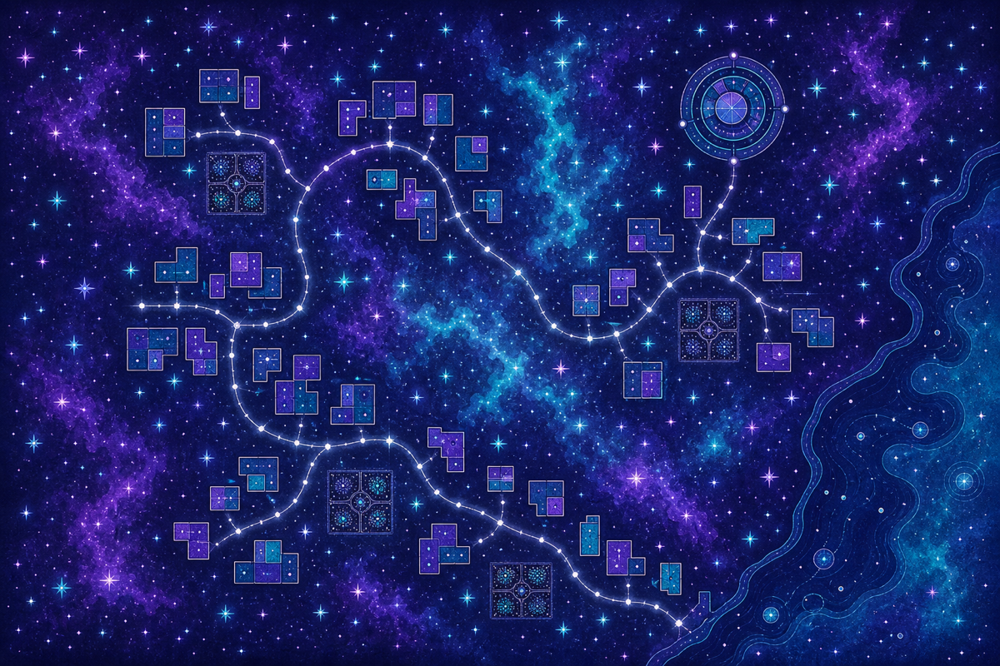

状态：还没有按下快门
量子状态是在测量前对系统的描述。它告诉我们有哪些结果可能出现，以及每种可能有多大。
|0⟩ 或 |1⟩

SheNicest烈变黑客松 · 量子赛道本地运行 凭据不离开电脑
Quantum Atlas · 无形世界调查局
序章 · 她的第八十年
沈遥在零点观测站收到一份来自自己年轻版本的档案。系统说一切都已经预测完毕；她只相信四条规则：先留下预测，只改变一扇门，等待结果，如果证据不够就把“不够”留下。
故事里的选择由实验留下证据。插画与台词不参与量子判定；真正的结果来自下面每一次本地运行、比较、推理和审计。
观测站日记 · 沈遥
清晨她先看窗外的云。云层没有回答她，仪器也没有。她把昨夜留下的数字抄在纸上，在旁边写下今天愿意相信的一句话。
午后她把同一件事再做一次，只改一个小地方。等待的时候，她会给窗边的植物添水，听见老旧的通风机一下一下地响。
夜里她把结果放回档案。能确定的就写清楚，不能确定的留在原处。研究员的工作有时很安静，安静到只剩一支笔在纸上的声音。
你现在看到的每一次实验，都从她这样的日常里开始。先观察，再动手，最后让结果自己说话。先预测，再动手，是沈遥留给新观察员的第一步。
第一次来量子世界？从这里开始
零基础也能直接用 · 先看小球，再看结果
你不需要先记住任何专业符号，也不用背下门的名字。把下面的小球当成一个“可能性”，我们只看三件事：它怎样移动、我们改了什么、最后看见了什么。
先观察小球现在代表一个还没有被测量的可能性。
沈遥的观测站手册 · 第一页
她不会一上来讲复杂公式。她先让新人知道，量子世界里“可能”“看见”和“相互关联”分别是什么意思。
量子状态是在测量前对系统的描述。它告诉我们有哪些结果可能出现，以及每种可能有多大。
一个量子比特可以同时保留多个可能。它不是普通硬币的“正反面还没看见”，而是保留了能继续产生干涉的振幅。
测量会给出一个实际结果。一次结果只说明这一次看到了什么，重复很多次，才会形成结果分布。
两个量子比特可以共享一个整体状态。看到其中一个结果时，另一个结果的分布会和它保持关联。
量子门会改变振幅和相位。不同路径重新相遇时，有些结果被加强，有些结果被抵消，这就是干涉。
“先别急着给世界命名。先写下你猜什么，再只改变一个地方。结果会告诉你，这次实验真正支持到哪里。”
把这五件事带进第一次实验量子村庄 · RPG 前导手册
先用一枚量子硬币认识叠加与测量，再进入沈遥的案件。每次按下测量，页面都会用本地精确模拟器计算结果，再把结果映射成两面世界贴图。
H 门把硬币放进叠加态。测量前，村庄与宇宙都保留为可能；测量后，结果会落在其中一面。
准备好后，亲手测一次。
来源：本地精确模拟器 · 电路与概率可展开复核 · 真机实验室证据
五份档案 · 五次回到现场
每个案件都有一个公开身份、一个隐藏身份，以及一项必须被重新检查的实验。

Quantum World · 序章
研究日志 001 · 窗外的云还没有散
沈遥每天都从一件很小的事开始。她把一个可能的答案写下来，再把同一件事重新观察一次。你可以和她一起走完这段路，不用先记住任何术语。
主视觉是旅程隐喻；结论只来自下方可重放实验，不把插画当作量子态证明。
第一幕：先留下你的预测。
双面人生 · 场景入口
每个地点都有一张陆地地图和一张太空地图。进入地点后，系统先落在当前世界；随后量子叠加可能让另一张地图短暂显现。


Quantum World · 第一个探究任务
沈遥把原来的观察完整保留，再拿走一个连接，看看结果从哪里开始改变。先预测，再运行对照实验；你只需要先说出自己的猜想，剩下的交给两次测量。
第一次保留原来的步骤。第二次只拿走一个连接。其他事情都不动。
尚未运行；实验完全在本地完成。
等待实验结果。
等待实验结果。
first divergence —
尚未运行；不需要模型密钥或平台账号。
点击 ProofTrace：这次转译改了什么，会看到三种目标平台都能回读同一份电路，还有可下载的证书。
点击 列出所有可能分支，会看到每条路径的概率、可达/不可达结果和死路径。
点击修复一段错误 QASM，会看到 Agent 先给出可运行答案，再由同一页的本地规则校验。
四条上手路径
q[0] 是最低位；测量结果按 c[n-1]…c[0] 显示。
改一扇门试试看
上方当前电路是参考答案。修改候选电路后，LoomQ 会逐门比较精确状态，定位第一个因果分歧，而不只比较最后一张概率图。
可先运行默认示例；也可以复制上方当前电路，再自行删除或替换一扇门。
点击“比较因果差异”，查看首个分歧门与最终分布距离。
参考门与候选门将在这里并列显示。
本地精确比较不诊断真实硬件噪声来源。
统一证据链
同一次审计把 ProofTrace 谱系、反事实首门分歧、断言读取位和 Hybrid 分支来源对齐到 g1 / m1 等稳定 witness ID。
内容地址 SHA-256 会在本地重算；它用于发现归档篡改，不是身份签名。
先看结论，再展开技术细节
页面只报告本地精确结论、有限 shots 置信区间或 provider 概率对比；任何偏差都不归因具体噪声机制。
复用上方当前 QASM。留空 observed 时走本地精确断言；填写 observed 后转为谨慎执行诊断，不归因具体噪声机制。
shots 留空时把 observed 当作 provider 概率；填写 shots 时按有限采样区间解释 pass / fail / inconclusive。
等待断言结果。该报告只说明数据与本地参考是否一致，不归因具体噪声机制。
这里先说明哪条路径会发生、概率是多少、会得到哪些结果；源码条件真假、machine jump、branch events 与哈希留在技术细节里。
bit 顺序直接对应 c[0], c[1], …；branch path 使用 ifN:T / ifN:F 标记源码条件真假，而不是机器跳转真假。
等待 Hybrid 回放结果。
模型调用前先锁定请求
模型和结果验证器读取同一份确定性合同。摘要用于发现内容变化，不是身份签名，也不宣称某个后端唯一兼容。
运行后显示任务类型、目标态、平台与账号约束，以及服务端重建结果。
需要时再用 Agent
Agent 的回答会经过门集、语法与目标态分布三重确定性校验。